Q&A 来自小风车
一段特别的回忆与情感
01 记忆的碎片
点点滴滴汇聚成我们共同的故事
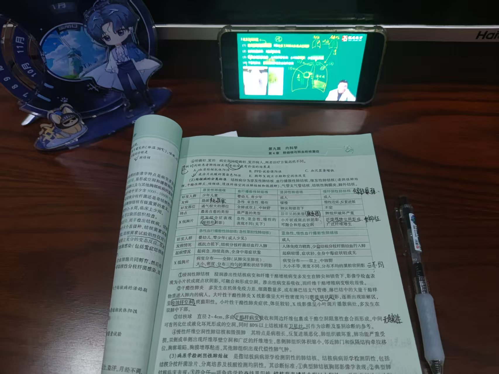
醒醒
那个阳光明媚的下午
醒醒
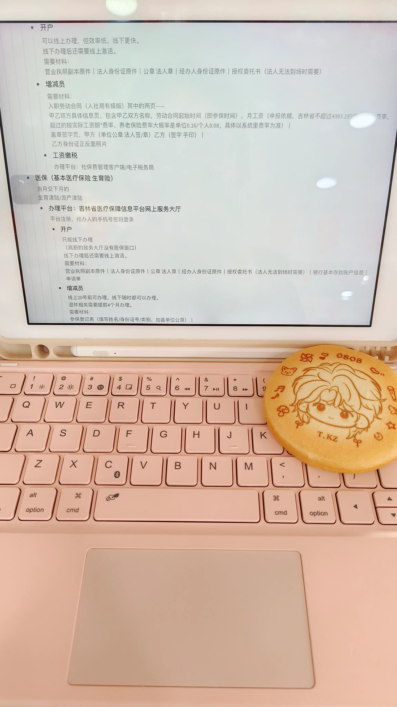
言汐
陪我记实操笔记的KK
言汐
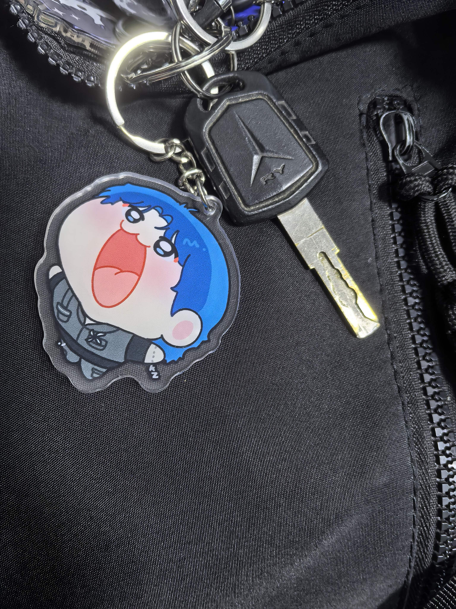
幺肆
KK每天陪我出行，我不能没有我的小电驴！
幺肆
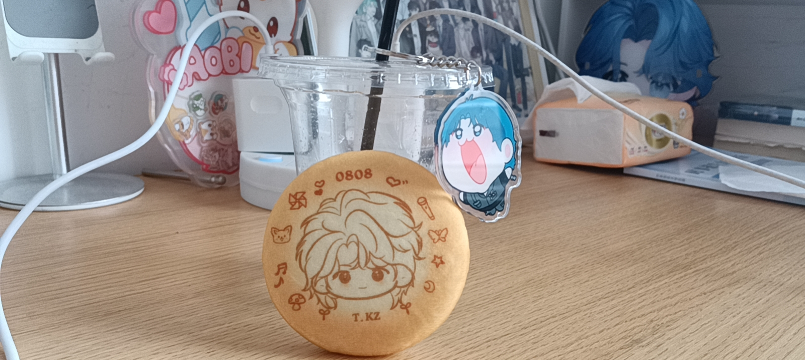
仲夏夜
音乐将我们连接
仲夏夜
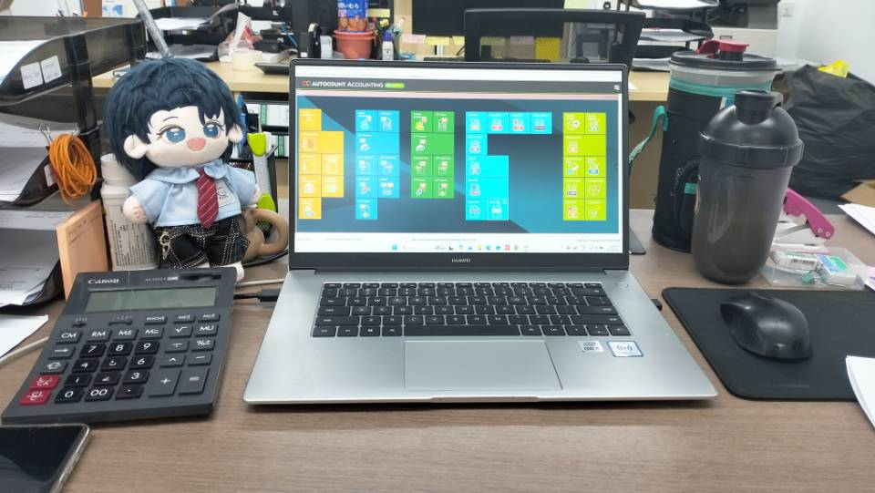
星冉
KK陪我一起上班吧
星冉
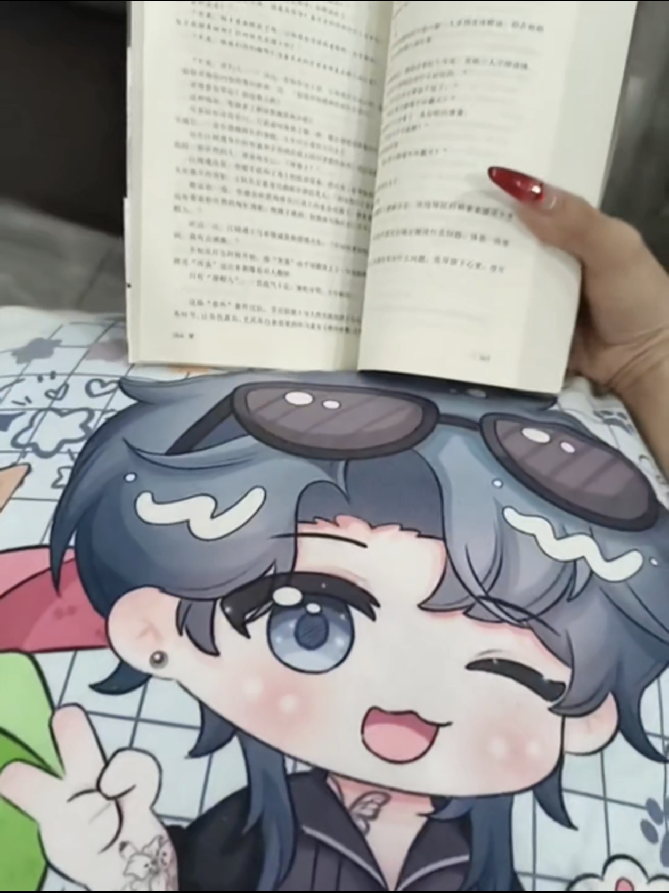
踪踪
KK陪我一起看书
踪踪
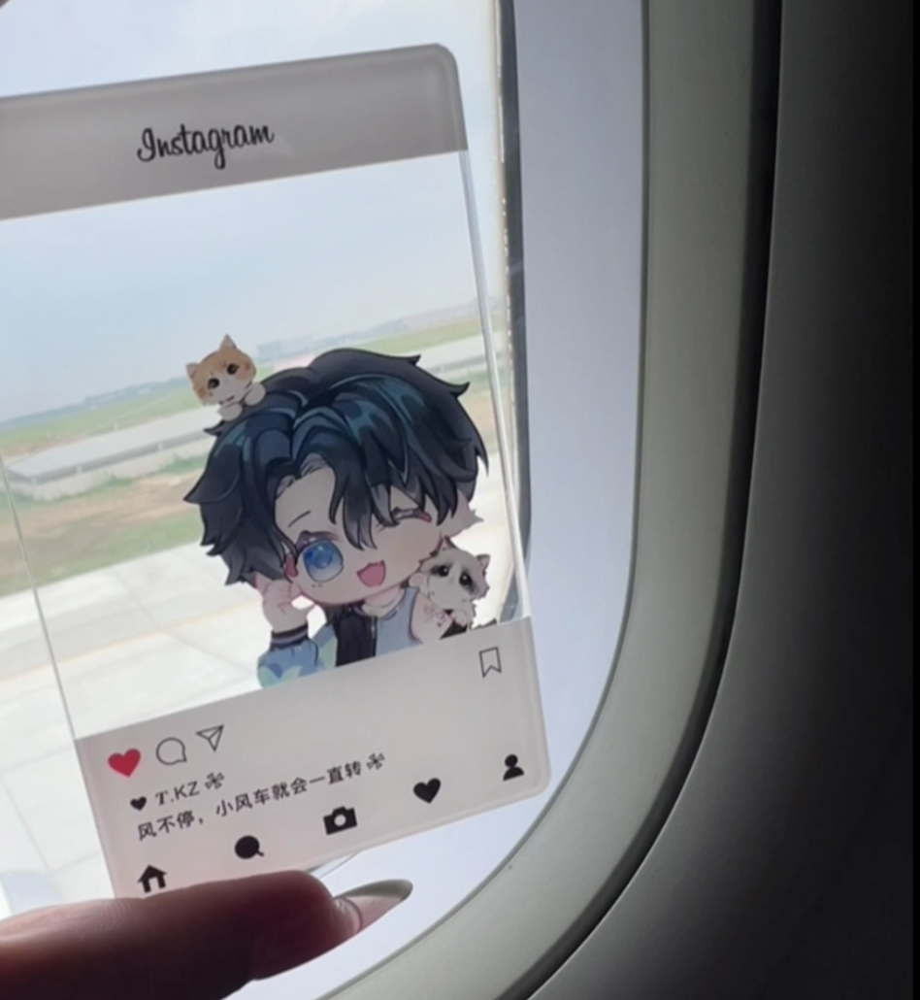
XiiiNing
陪我坐飞机的KK
XiiiNing
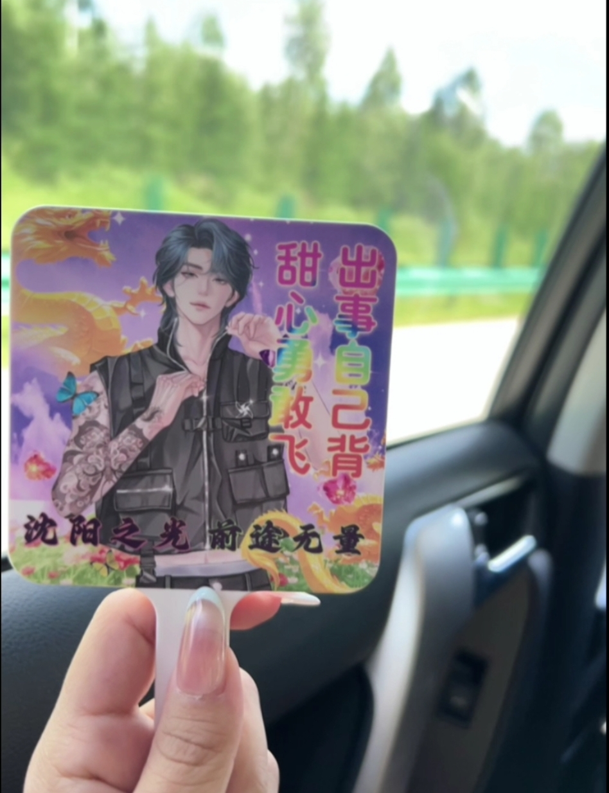
XiiiNing
陪我坐车的KK
XiiiNing
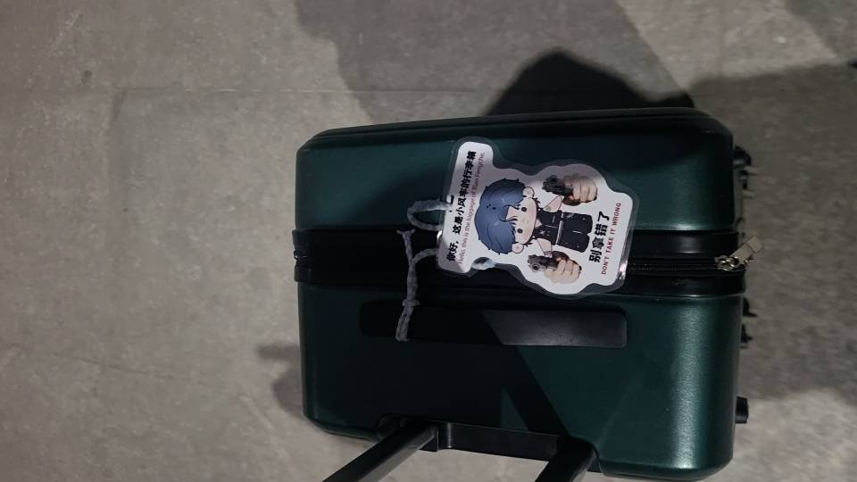
活捉一只王胜利
KK陪我一起回家过年！
活捉一只王胜利

Wincy
KK陪我一起复习！
视力2.0

视力
摸鱼做KK的周年祝福ing...
Wincy
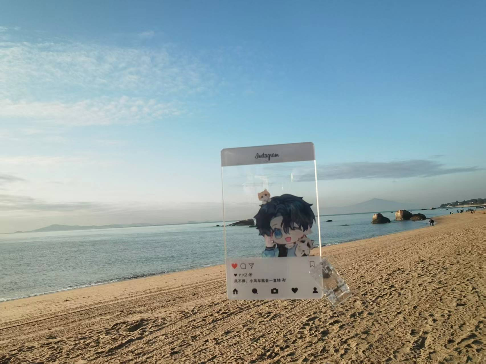
不爱主角综合征
KK陪我一起去看海
不爱主角综合征
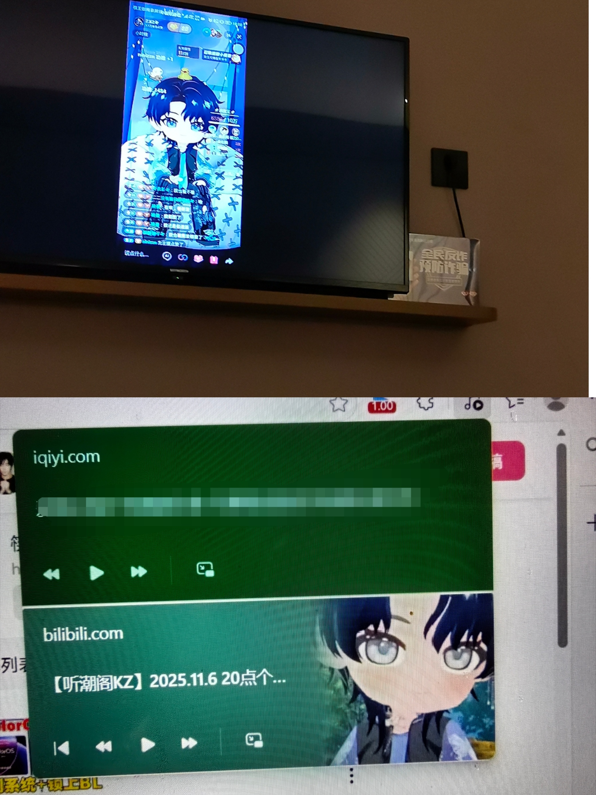
小炒喂喂
小k陪伴度过空闲时间
小炒喂喂
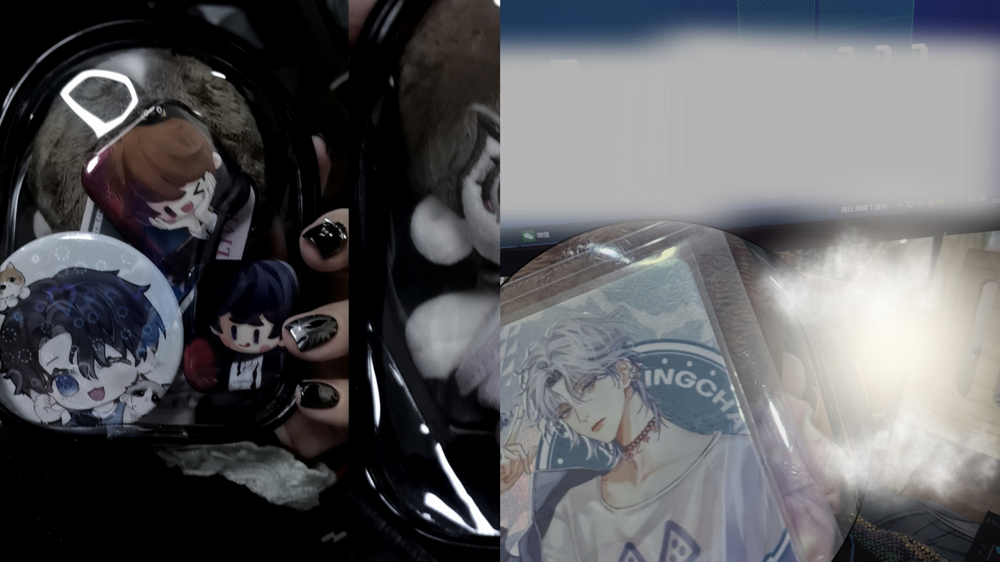
小炒喂喂
小k陪上班
小炒喂喂
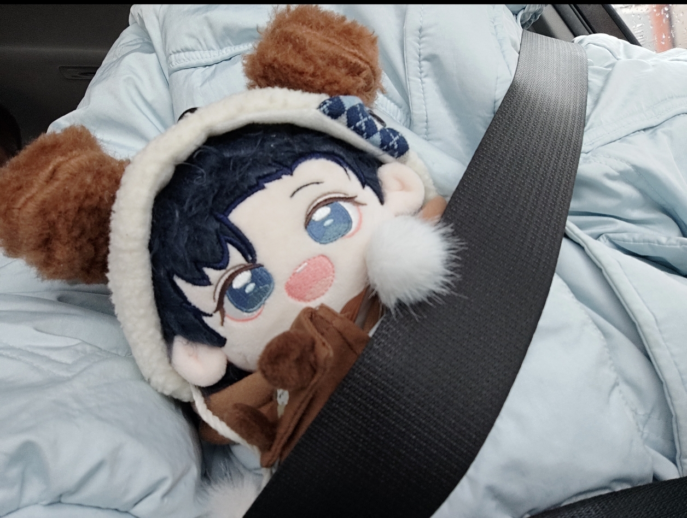
哟呵
小k陪上班
哟呵
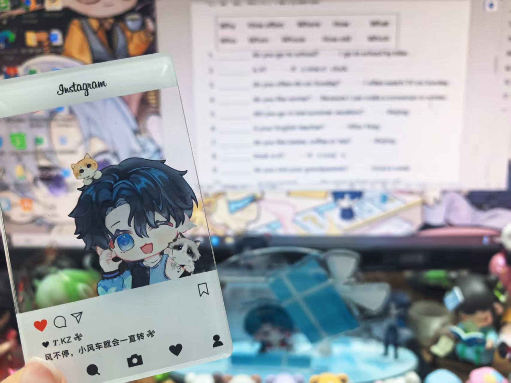
微影
KK陪我一起出试卷
微影
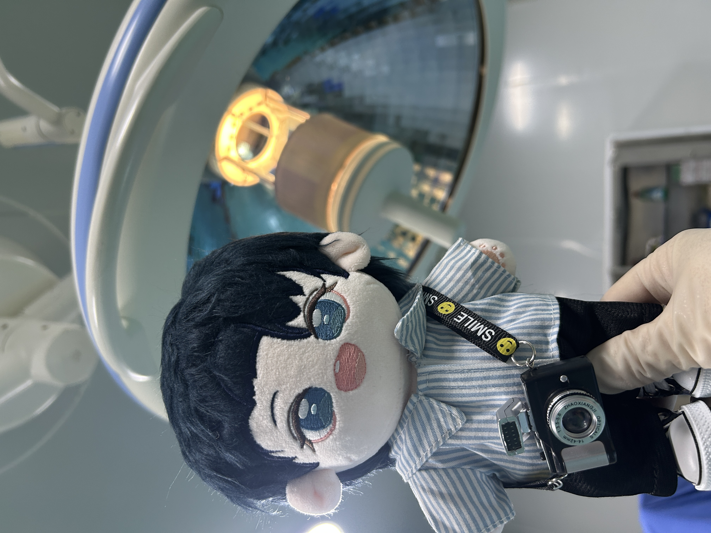
猫妖
KK陪我一起上班
猫妖
滚动继续故事